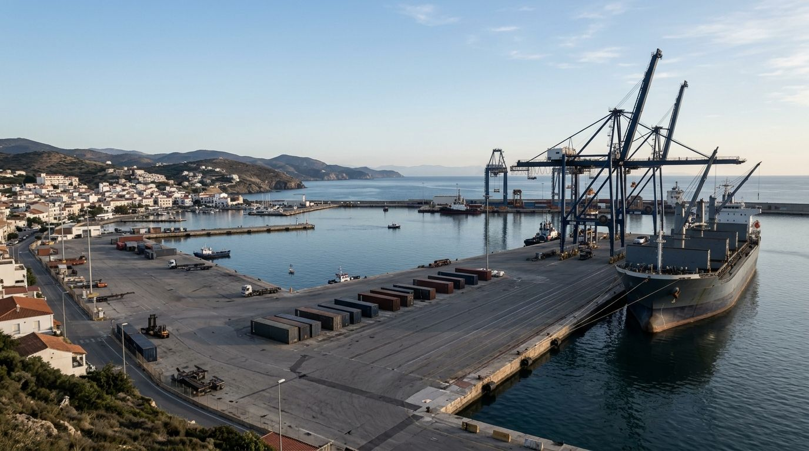

Une société née pour relier les deux rives
MSI – Méditerranéenne Service Ligne organise le transport de marchandises par route et par mer entre l'Europe et l'Afrique du Nord.
Créée en 2024, installée à Paris
MSI est une société par actions simplifiée unipersonnelle (SASU). Elle a été créée en 2024 et son siège est à Paris.
Son objet : l'affrètement et l'organisation de transports maritimes, terrestres et aériens, avec un point d'ancrage sur les liaisons Europe – Afrique du Nord.
- Forme
- SASU
- Création
- 2024
- Siège
- Paris
- Activité
- Transport de marchandises par route et par mer
Relier l'Europe et l'Afrique du Nord par des solutions de transport maritime et routier, organisées pour répondre aux besoins de chaque client.

Ce qui guide notre façon de travailler
Fiabilité
Tenir ses engagements et organiser chaque transport avec rigueur.
Transparence
Une information claire, des échanges directs et sans ambiguïté.
Réactivité
Anticiper les formalités et répondre vite aux demandes.
Maritime Ro-Ro, routier, logistique
Trois expertises complémentaires pour couvrir le transport de bout en bout, sur un axe géographique précis.
Europe
- France
- Espagne
- Italie
Afrique du Nord
- Maroc
- Algérie
Ports et hubs
- Tanger Med
- Casablanca
- Sète
Un transport à organiser ?
Parlez-nous de votre trajet et de vos marchandises.